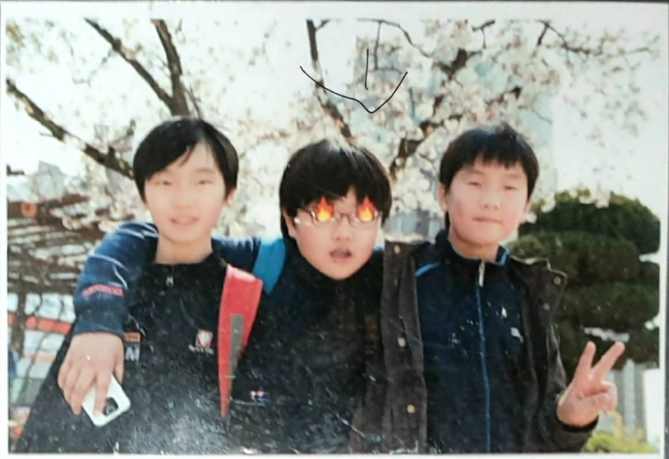
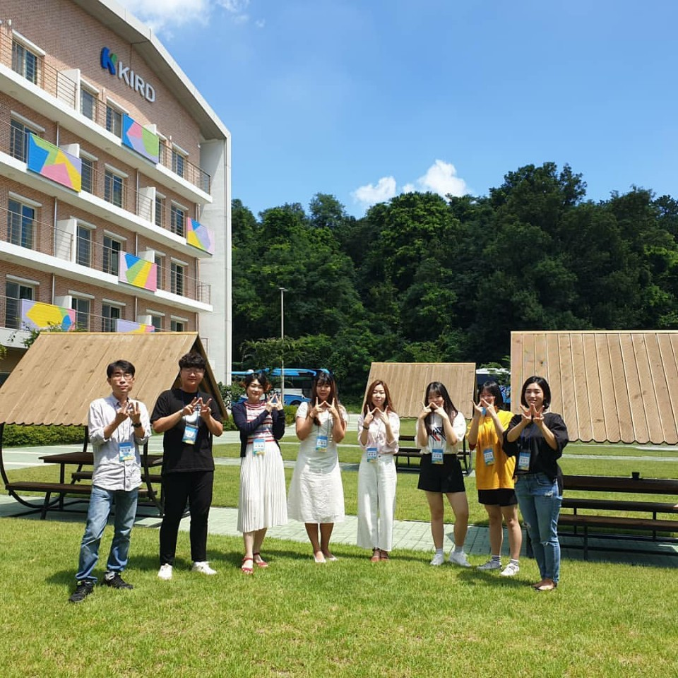

초등학생까지는 책읽기 특히 과학책을 좋아하는 소년이었습니다.
제가 머리가 좋다고 생각하는 이유도 이것 같아요(생각은 자유니까)

중학생때는 게임에 푹 빠져 게임만 했었습니다 (성과는 롤 브론즈에서 골드!). 그래도 부모님은 내가 뭘 하든 지원해주셧기 때문에 행복했었습니다.
고등학생땐 좀더 노력했습니다. 기말땐 44등도 해보고요.

특히 나서는걸 좋아해 무언가 할 기회만 있으면 참여했습니다.
발표는 물론이고 위 사진처럼 체험활동도 다 참여했습니다.(이 대회도요!)
또 책도 다시 자주 읽다 보니 생각을 점점 많이 하게 되더라고요.